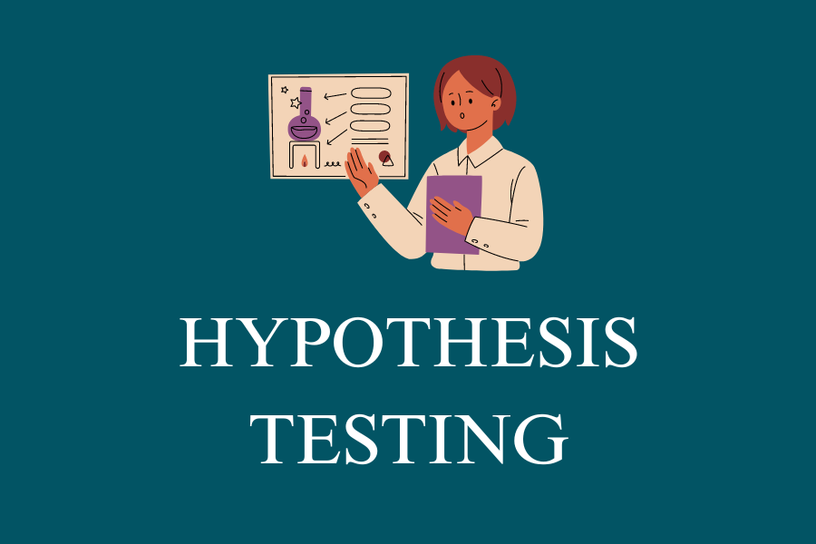

playlist details

4 videos

Jeden Heart Apatan
05-22-23Hypothesis Testing
Hypothesis testing is a formal procedure for investigating our ideas about the world using statistics. It is most often used by scientists to test specific predictions, called hypotheses, that arise from theories.